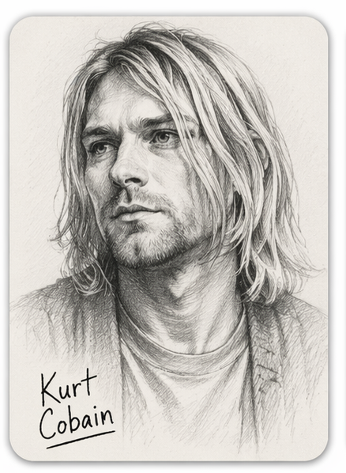
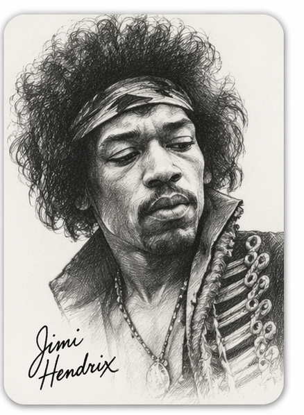
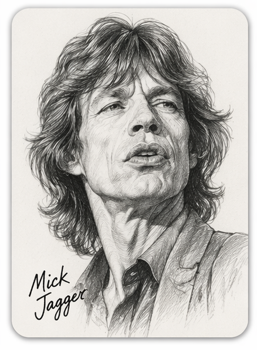

Kurt Cobain

Líder de Nirvana y figura central del movimiento grunge, Kurt Cobain expresó el desencanto de toda una generación. Su estilo crudo y emocional dejó una huella profunda en la historia del rock de los años 90.

Líder de Nirvana y figura central del movimiento grunge, Kurt Cobain expresó el desencanto de toda una generación. Su estilo crudo y emocional dejó una huella profunda en la historia del rock de los años 90.

Considerado uno de los mejores guitarristas de todos los tiempos, Jimi Hendrix revolucionó el uso de la guitarra eléctrica. Su innovación sonora y su estilo único redefinieron el rock y la música psicodélica.

Como vocalista de The Rolling Stones, Mick Jagger es sinónimo de energía y actitud rockera. Su carisma y longevidad lo han convertido en una leyenda viva del escenario.